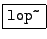
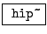
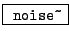
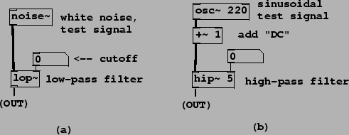

Patches H01.low-pass.pd, H02.high-pass.pd, and H03.band-pass.pd (Figure 8.28) show Pd's built-in filters, which implement filter designs described in Sections 8.3.1, 8.3.2 and 8.3.4. Two of the patches also use a noise generator we have not introduced before. We will need four new Pd objects:
:
one-pole low-pass filter. The left inlet takes a signal to be filtered, and
the right inlet takes control messages to set the
cutoff frequency of the filter. The filter is normalized so that the
gain is one at frequency 0.
:
one-pole, one-zero high-pass filter, with the same inputs and outputs as
lop~, normalized to have a gain of one at the Nyquist frequency.
 :
resonant filter. The middle inlet takes control messages to set the center
frequency, and the right inlet to set ``q".
:
resonant filter. The middle inlet takes control messages to set the center
frequency, and the right inlet to set ``q".
:
white noise generator. Each sample is an independent
pseudo-random number, uniformly distributed from -1 to 1.
|  |
The first three example patches demonstrate these three filters (see Figure 8.28). The lop~ and bp~ objects are demonstrated with noise as input; hip~ as shown is used to remove the DC (zero frequency) component of a signal.